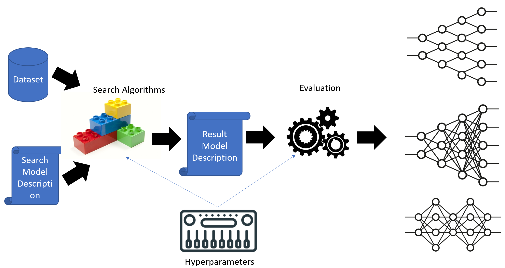

Archai - A 30 Minute Tutorial¶
If you would like to follow through this tutorial, please make sure you have installed Archai.
Network Architecture Search (NAS)¶
Network architecture search is the process of finding best performing neural network architectures for a given problem. Usually, we have a dataset such as ImageNet and we want to figure out how to arrange operations such as convolutions and pooling to create a neural network that has the best classification accuracy. Many practical situations also require that the architecture must fit into device memory or should use only certain number of flops. NAS shines in such problems because finding optimal/near-optimal architecture requires a lot of guess work and human effort.
So how do we automatically find a good neural architecture? There are a number of algorithms proposed by the NAS research community in the past few years. In this tutorial we will learn how to use existing algorithms in Archai. We will also get the overview of how Archai works and finally we will implement a popular NAS algorithm called DARTS to show how you can implement your own algorithm (often only with a few lines of code). If you are not familiar with DARTS, we recommend reading the paper or basic overview first and then coming back here.
Running Existing Algorithms¶
Running NAS algorithms built into Archai is easy. You can use either command line or Visual Studio Code. Using command line, run the main script specifying the --algos switch:
python scripts/main.py --algos darts
Notice that the run completes within a minute or so. This is because we are using reduced dataset and epochs just to quickly see if everything is fine. We call this toy mode. Doing a full run can take couple of days on single V100 GPU. To do a full run, just add the --full switch:
python scripts/main.py --algos darts --full
When you run these algorithms, Archai used cifar10 dataset as default. Later we will see how you can use other datasets or even bring our own custom dataset easily.
By default, Archai produces output in ~/logdir directory. You should see two directories: One for search and other for evaluation often refered colloqually in docs as eval. Evaluation in NAS means taking architecture/s that were found during the search phase and training them from scratch on the full dataset for longer and often with lots of enhancements added on. The search folder should have final_model_desc.yaml which contains the description of network that was found by DARTS. You will find model.pt which is trained PyTorch model generated after scaling the architecture found by search process and training it for longer. You should also see log.log which captures the human readable logs and log.yaml that is machine readable version of logs.
You can also use other algorithms available in Archai instead of DARTS. You can also run multiple algorithms by specifying them in comma separated list.
We will use Visual Studio Code in this tutorial however you can also use any other editor. Archai comes with preconfigured run configurations for VS Code. You can run DARTS in debug mode by opening the archai folder and then choosing the Run button (Ctrl+Shift+D):

Config System¶
Archai uses a sophisticated YAML based configuration system. As an example, you can view configuration for running DARTS algorithm. At first it may be a bit overwhelming, but this ensures that all config parameters are isolated from the code and can be freely changed. The config for search phase is located in nas/search section while for evaluation phase is located in nas/eval section. You will observe settings for data loading in loader section and training in trainer section. You can easily change the number of epochs, batch size etc.
One great thing about Archai config system is that you can override any setting specified in YAML through command line as well. For instance, if you want to run evaluation only for 200 epochs instead of default 600, specify the path of the value in YAML separated by . like this:
python scripts/main.py --algos darts --nas.eval.trainer.epochs 200
You can read in more detail about features available in Archai config system later.
Architecture Overview¶
Now that we are familiar with how to run NAS algorithms, use command line switches and configuration system, let’s briefly review how Archai works.
Some of the most popular NAS methods like DARTS use what is known as a proxy dataset. So if you want to find network that works on ImageNet, you may use smaller dataset such as CIFAR10 (or a subset of ImageNet) for search. After you have found the network for CIFAR10, you scale it up, change model stems and train for longer epochs. This final network now can be used for ImageNet. So these type of NAS methods works in two phases: search and evaluation.
Archai uses YAML based model description that can be “compiled” to PyTorch model at anytime. The advantage of using such description is that model description can easily be generated, modified, scaled and visualized. Before the search starts, Archai creates the model description that represents the super network that algorithms like DARTS can use for differentiable search. The output of the search process is again model description for the best model that was found. This output model description is than used by evaluation phase to scale it up and generate the final trained PyTorch model weights. This process is depicted in below diagram:

We will now see how this workflow can be implemented in Archai.
Archai Core Classes¶
At the heart of Archai are the following classes:
ExperimentRunner: This class is the entry point for running the algorithm through its
runmethod. It has methods to specify what to use for search and evaluation that algorithm implementer can override.Searcher: This class allows to perform search by simply calling its
searchmethod. Algorithm implementer should inherit from this class and override methods as needed.Evaluater: This class allows to perform evaluation of given model by simply calling its
evaluatemethod. Algorithm implementer should inherit from this class and override methods as needed.Model: This class is derived from PyTorch ``nn.Module` and adds additional functionality to represent architecture parameters.
ModelDesc: This is model description that describes the architecture of the model. It can be converted to PyTorch model using the
Modelclass anytime. It can be saved to YAML and loaded back. The purpose of model description is to simply allow machine readable data structure so we can easily edit this model programmatically and scale it during the evaluation process.ModelDescBuilder: This class builds the
ModelDescthat can be used bySearcheror evaluated byEvaluater. Typically, algorithm implementer will inherit from this class to produce the model that can be used by theSearcher.ArchTrainer: This class takes in the instance of
Modeland trains it using the specified configuration.Finalizers: This class takes a super network with learned architecture weights and uses strategy to select edges to produce the final model.
Op: This class is derived from
nn.Modulebut has additional functionality to represent deep learning operations such as max pool or convolutions with architecture weights. It also can implement finalization strategy if NAS method is using super networks for searching.
Implementing DARTS¶
We will now do quick walkthrough on how we can implement DARTS in Archai as an example. Note that this algorithm is already implemented so you can see the final code.
At high level, we will first create the the op that combines all ops along with their architecture weights. We will call this MixedOp. We will then use the MixedOp to create super network with all possible edges. To train this super network, we will override ArchTrainer and use bi-level optimizer. After the model is trained, we will use Finalizers class to generate the final model description. Finally, we will just use default Evaluater to evaluate the model.
Implementing MixedOp¶
The main idea is to simply create all 7 primitives DARTS needs and override the forward method as usual to sum the output of primitives weighted by architecture parameters.
class MixedOp(Op):
...
def forward(self, x):
asm = F.softmax(self._alphas[0], dim=0)
return sum(w * op(x) for w, op in zip(asm, self._ops))
Notice that we create one architecture parameter for each primitive and they stay encapsulated within that instance of Op class. The nn.Module only has parameters() method to retrieve learned weights and does not differentiate between architecture weights vs. the regular weights. The Op class however allows us to separate these two types of parameters.
Another method to focus on is finalize which chooses top primitives by architecture weight and returns it.
class MixedOp(Op):
...
def finalize(self) -> Tuple[OpDesc, Optional[float]]:
# return finalized op description and its weight
with torch.no_grad():
# select except 'none' op
val, i = torch.topk(self._alphas[0][:-1], 1)
desc, _ = self._ops[i].finalize()
return desc, float(val.item())
Implementing the ModelDescBuilder¶
The job of ModelDescBuilder is to build the super network that searcher can use. The ModelDescBuilder builds the model description in parts: first model stems, then each cell and finally pooling and logits layers. Within each cell we first build cell stems, then nodes and their edges and finally a layer we will call “post op” that produces the output. Each of these steps are implemented in their own methods so you can override any portion of model building and customize according to your needs.
For DARTS, we just need to build nodes with MixedOp as edges. For this we override the build_nodes method.
class DartsModelDescBuilder(ModelDescBuilder):
...
def build_nodes(self, stem_shapes:TensorShapes,
conf_cell:Config,
cell_index:int, cell_type:CellType,
node_count:int,
in_shape:TensorShape, out_shape:TensorShape) \
->Tuple[TensorShapes, List[NodeDesc]]:
# is this cell reduction
reduction = (cell_type==CellType.Reduction)
# create nodes list
nodes:List[NodeDesc] = []
# input and output channels for each node
conv_params = ConvMacroParams(in_shape[0], out_shape[0])
# for each noce we will create NodeDesc object
for i in range(node_count):
# for each node we have incoming edges
edges=[]
# each node connects back to all previous nodes and s0 and s1 states
for j in range(i+2):
# create MixedOp for each edge
op_desc = OpDesc('mixed_op',
params={
# in/out channels for the edhe
'conv': conv_params,
# if reduction cell than use stride=2
# for the stems
'stride': 2 if reduction and j < 2 else 1
},
# MixedOp only takes one input
in_len=1)
# Edge description specifies op and where its input(s) comes from
edge = EdgeDesc(op_desc, input_ids=[j])
edges.append(edge)
# add the node in our collection
nodes.append(NodeDesc(edges=edges, conv_params=conv_params))
# we need to return output shapes for each node which is same as input
out_shapes = [copy.deepcopy(out_shape) for _ in range(node_count)]
return out_shapes, nodes
Notice that the parameters of this method tell us the expected input and output shape for each node, the cell type indicating whether it’s a regular or reduction cell and so on. The core of the method simply creates the NodeDesc instances to represent each node.
Implementing the Trainer¶
To perform a search, DARTS uses bi-level optimization algorithm. To implement this, we need to separate regular weights from architecture weights. We then train the architecture weights using the bi-level optimizer. This can be done easily by taking advantage of hooks that the trainer provides. These include pre_fit and post_fit hooks that get executed before and after the code for the fit method. So, in pre_fit we can initialize our BilevelOptimizer class.
class BilevelArchTrainer(ArchTrainer):
...
def pre_fit(self, train_dl: DataLoader, val_dl: Optional[DataLoader])->None:
super().pre_fit(train_dl, val_dl)
# get config params for bi-level optimizer
w_momentum = self._conf_w_optim['momentum']
w_decay = self._conf_w_optim['decay']
lossfn = ml_utils.get_lossfn(self._conf_w_lossfn).to(self.get_device())
# create bi-level optimizer
self._bilevel_optim = BilevelOptimizer(self._conf_alpha_optim,
w_momentum,
w_decay, self.model, lossfn)
Then we use pre_step hook to run a step on BilevelOptimizer.
class BilevelArchTrainer(ArchTrainer):
...
def pre_step(self, x: Tensor, y: Tensor) -> None:
super().pre_step(x, y)
# get the validation dataset for bi-level optimizer
x_val, y_val = next(self._valid_iter)
# get regular optimizer
optimizer = super().get_optimizer()
# update alphas
self._bilevel_optim.step(x, y, x_val, y_val, optimizer)
Putting It All Togather¶
Now that we have our own Trainer and ModelDescBuilder for DARTS, we need to tell Archai about them. This is done through a class derived from ExperimentRunner. We override model_desc_builder() and trainer_class() to specify our custom classes.
class DartsExperimentRunner(ExperimentRunner):
def model_desc_builder(self)->DartsModelDescBuilder:
return DartsModelDescBuilder()
def trainer_class(self)->TArchTrainer:
return BilevelArchTrainer
Finally, add our algorithm name and DartsExperimentRunner in main.py so it gets used when darts is specified in --algos switch.
def main():
...
runner_types:Dict[str, Type[ExperimentRunner]] = {
'darts': DartsExperimentRunner,
...
}